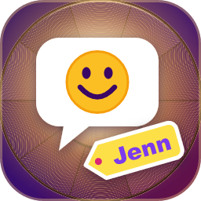

Privacy Policy
Jenns Role ReactionBot · Last updated September 24, 2026
The short version: the bot only remembers which messages are role messages and which emoji goes with which role. It doesn't save anything about you, what you say, or which roles you pick.
What the bot saves
When someone makes a role message with /rr create, the bot saves the setup so it keeps working after a restart:
- the ID of the role message and the channel it's in
- the title of the role message
- each emoji and the ID and name of the role it goes with
That's everything. None of it is about individual people.
What the bot doesn't save
- It doesn't keep a list of who reacted or who has which role. When you click a reaction, the bot gives you the role and moves on.
- It doesn't store your messages. It reads new messages only to spot ones that start with
/rr, and ignores everything else. - It doesn't collect emails, IP addresses, or anything from outside Root.
- It doesn't use analytics or tracking, and there are no ads.
What the bot uses while it's working
To do its job, the bot briefly sees some info that Root sends it: your user ID when you react to a role message or run a command, and your roles when you use a command, to check whether you're allowed to. It uses that on the spot and doesn't save it.
Where it's stored
The role message setup is stored in the bot's own storage on Root's servers. It isn't sent anywhere else and it isn't shared with or sold to anyone. Root's own privacy policy covers how Root handles your account and community data.
Getting it deleted
- Run
/rr remove, or just delete the role message, and the bot deletes that role message's setup straight away. - If a community uninstalls the bot, it stops running there. If you want the leftover setup wiped too, get in touch and I'll delete it.
Kids
The bot follows Root's age rules and doesn't knowingly collect anything about anyone, kids included.
Changes
If the bot ever starts saving something new, I'll update this page and the date at the top before that change goes out.
Questions
If you have a question or want something deleted, you can reach me through jenn.zip.